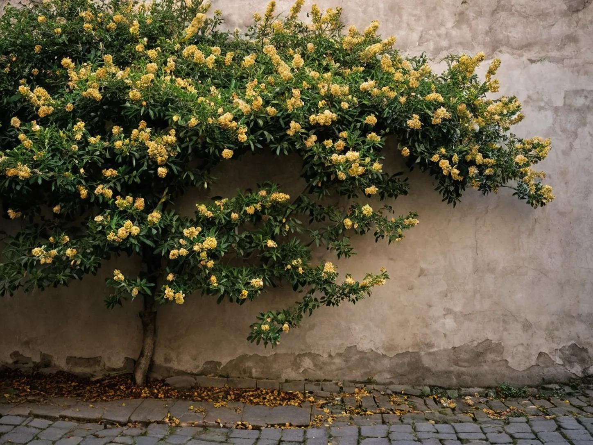

The First Osmanthus Scent at the Alley Wall
At an alley wall in early autumn, the first osmanthus scent turns an ordinary evening walk into a small record of the season changing.

At the alley wall
I noticed the scent before I saw the branch. The alley was already dim, with bicycles leaned under the eaves and rain-dark stones holding the last warmth of the day, when a dry sweetness crossed the wall and stopped me. A spray of tiny gold flowers had opened above the peeling plaster, too high to gather and too slight to command the whole lane. A faint scatter had already fallen along the wall, but the scent made the high branch feel much closer than it was.
Osmanthus arrives in such small increments that the first evening can feel private. One day the wall is only a wall; the next, someone walking home slows down, looks up, and knows the weather has begun to turn. The flowers remain nearly invisible until the nose supplies their location.
A scent marks the season
In many Jiangnan homes, fresh or dried osmanthus belongs near familiar autumn foods: a jar of sugared blossoms, a tea cup, a bowl set out after a meal. The point is not that every household keeps the same thing, but that a flower with a brief season becomes easy to recognize in kitchens and lanes. Its return gives the year a cue that no printed calendar needs to explain. Even when no flowers reach the table, their name can still surface in the talk around an ordinary evening meal.
Biting Autumn: Watermelon on the First Autumn Evening records a single shared cut at dusk, while The Bamboo Drying Tray in Autumn Sun follows beans and dates into clearer late-summer light. Osmanthus asks less of the household than either scene: it only passes the wall and changes the air. Like the chrysanthemums in an autumn tea cup, it can make a season present through one ordinary sense.
What remains after dusk
By morning, several loose flowers had collected in the crack beside the paving stones. A scooter passed them without stirring much, and the branch above had disappeared again into leaves. Nothing had been picked or carried indoors.
That was enough. Later in the year I may remember the first cool morning, the first closed window, or the first heavier sleeve, but the wall keeps its own beginning. For one evening, the lane was measured not by the clock or the date, but by a scent that arrived before anyone spoke of autumn. The next morning, the wall looked unchanged from a distance, yet the alley had acquired a season.